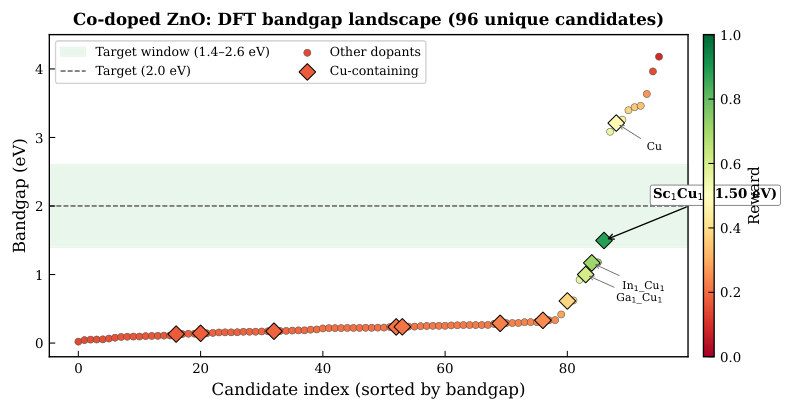

Formalizes the Lyapunov stability analysis of the MF-OFUL bandit's surrogate errors in Lean 4: 1,826 lines and 57 theorems, with 12 matrix-analysis axioms absent from Mathlib.
Abstract
Band gap engineering of oxide semiconductors through doping is critical for photocatalysis and optoelectronics, yet the combinatorial space of dopant elements, substitution sites, and co-doping combinations far exceeds typical density functional theory (DFT) budgets. We screen doped candidates across five oxide hosts (ZnO, TiO2, SrTiO3, SnO2, MgO), culminating in a 529-candidate ZnO co-doping campaign, and identify Cu-containing co-doped ZnO systems as consistently achieving visible-light-range band gaps (1.0-1.8 eV), with Y2Cu2 co-doped ZnO as the optimal candidate (1.84 eV). A three-tier validation funnel (PBE, PBE+U, ionic relaxation) reveals that no single level of theory suffices: V-doped ZnO shifts from near-metallic to wide-gap upon Hubbard U correction, while Cu-doped SrTiO3 enters the visible-light window only after correcting for d-electron localization. To make this screening tractable, we introduce a multi-fidelity screening strategy that replaces 81% of DFT evaluations with computationally inexpensive surrogate predictions, reducing a 529-candidate closed-loop Quantum ESPRESSO campaign from an estimated 440 to 62 CPU-hours while finding the global optimum in 100% of 50 independent trials (p = 5.0e-8 versus random screening, Wilcoxon signed-rank). Cross-host analysis of the dopant-host interaction matrix reveals that dopant performance is governed by just two latent chemical dimensions, enabling prediction of rankings in unseen hosts. All 583 DFT calculations, screening code, and stability proofs are released as an open benchmark.
Problem
Screening doped oxide semiconductors for target band gaps involves combinatorial candidate spaces that exceed DFT budgets. A cheap, formally grounded selection strategy is needed that keeps surrogate errors bounded.
Approach
The authors propose MF-OFUL, a multi-fidelity linear contextual bandit that uses a bootstrap Ridge surrogate to replace many DFT calls. A three-tier DFT funnel (PBE, PBE+U, ionic relaxation) validates the candidates it finds. A Lyapunov stability analysis bounds the effect of surrogate bias on regret. This analysis is formalized in Lean 4 (57 theorems, no sorry), conditional on 12 axioms for standard matrix results such as the Woodbury identity.
Results
In a 529-candidate ZnO co-doping campaign, MF-OFUL replaced 81% of DFT evaluations and cut cost from an estimated 440 to 62 CPU-hours. It found the global optimum in all 50 trials, identifying Y2Cu2 co-doped ZnO (1.84 eV) as the optimal candidate. The 583 DFT calculations, the code and the Lean proofs are released.

Figure 7: Bandgap landscape of the 529-candidate ZnO co-doping campaign. Each point represents a DFT-evaluated candidate, sorted by bandgap and colored by reward (green: near 2.0 eV target; red: far from target). Cu-containing systems (diamonds) cluster near the target window (green band), while most other combinations produce wide-gap or near-metallic outcomes. Key Cu co-doped candidates are anno